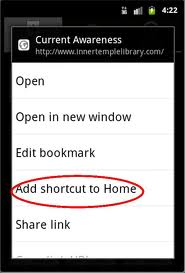
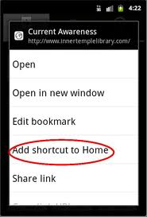

Agile Pair Programming
Working together from the beginning

Why Pair Programming?

- Four eyes, two brains, one mind
- Different ideas/specialties = skill transfer
- Higher quality code
Exercise #2 - Mobile Experience
 vs
vs 
- Tacobell.com vs m.tacobell.com
- What are the differences in user experience?
- What do you notice about navigation, content, and images?
- What about the flow of the website?
Native Apps - Distribution Channels
Ability to download apps from specific distribution channels


HTML5 & Web Apps - Distribution Channels
No official appstore - need to do more promotion

Chrome Webstore, Opera's Widgets
Let's load up our website!


Let's make it easily accessible
Let's make our website easily accessible from the device home screen

Ex #3 continued - iOS
Let's make this easy to get back to later :)
iOS (iPod touch and iPhones)
- Click on the icon in the center of the bottom bar
- Select 'Add to Home Screen'


Ex #3 continued - Android
- Tap on the menu button on the device. Select 'Add bookmark'
- Tap on the menu button and select 'Bookmarks'
- Tap and hold on the bookmark
- Select 'Add shortcut to Home'

 

Other - Explore the options together :)
Ex #3 continued - BlackBerry
- Click on BlackBerry menu button.
- Click on "Add to Home Screen"

Determine what the user is using
Can I make my website smarter? Can it figure out what device the user is using?
www.cbc.ca - desktop vs mobile phone


How do I apply this theory to our website?
Cool! Now that we know how to use CSS Media Queries, can we apply this theory to our website?
Can we activate a look and feel for my website?
 vs
vs 
What is CSS? - Cascading Style Sheet

HTML (Structure) vs CSS (Style)?
vs 

We use index.html as the website structure with mobile.css/desktop.css for the styling.
Mobile Design Note #2 - Make it Linear!
When arranging content for small screens, we make things 'linear' down the screen.
Squeezing things side-by-side ===> too small.

More CSS - Floats
Floats allow you to take an HTML element out of its normal position, and slide it up to the left or right.

They allow you to easily create things like columns as in our desktop site
More CSS - Display
Some HTML elements naturally occur in the same line -- 'inline' -- with other elements. Inline elements usually do not support a height, width or padding as they sit inline anyways. Block elements like to take up as much horizontal space as possible.

Display: inline-block;
You can combine these two behaviours. The divs here would have a width and height (like our 'items')

Mobile Design - Linearization
Using our knowledge of display:, we can now very easily display our items one at a time down the screen.
Similarily, with our knowledge of float:, we can pop the sidebar and content back on top of each other.

Still looks weird!
What is happening? Shouldn't this be okay now?
Mobile browsers attemping to be intelligent - "zoom to fit screen"
The device is trying to be smart and showing you as much as possible... we don't want that though!

"Zoom to Fit" vs "Zoom to Actual Size"
Zoom to fit screen: Scale it! I want a birds-eye view of everything on the screen (50%)
Zoom to actual size: I want to see the actual size of my content (100%)
We need to specify a view behaviour for the browser.
 vs
vs
What do you think about the links?
Easy to click?

Too Much Scrolling!
Takes too much effort to scroll past the categories and your cart.
FUSTRATING! - too much content in one screen!

Easy Navigation
Let's add a navigation bar

Create Categories
Let's create the categories page

Create Candies and Apparels
Let's create the Candy and Apparel pages


Ex #11 Part 3
Let's move the cart too
- Copy from
<div class='cart'>up to and including<!-- end cart --> - Paste into
cart.htmlwhere it indicates

Get Rid of Unnecessary Content
Now that we have the pages broken out, we don't need all the content on the welcome screen. Can we hide it?
Custom Icon
Let's make our web app a little more special!

A great online tool that is similar to Photoshop: www.pixlr.com/editor
- With your pair, come up with a cool icon for the site. Make a pretty icon! Or find something from the Internet :)
- The image should be 57px by 57px
- Save this icon as anything you'd like. Eg. custom_icon.png. Save it in the same place that index.html is
Exercise #13 - Add a Map
First we'll let users know where our fake shop is, and then show them a video of our choosing.
- Open
index.htmland find<-- Exercise #13 --> - Go to maps.google.ca (on your desktop) and choose some location to map - anywhere you and your pair want!
- Click the little chain (top left-ish)

- and copy the contents of the first little box
- Construct an HTML link below the comment:
<-- Exercise #13 --> <a href='PASTE YOUR MAP LINK HERE'>Our shop location</a>
Clicking this on the desktop website isn't very exciting.